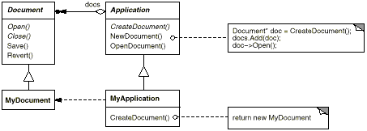
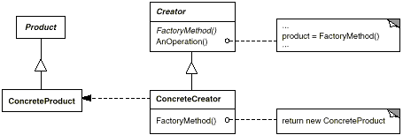
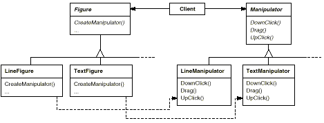

class Creator {
public:
virtual Product* Create(ProductId);
};
Product* Creator::Create (ProductId id) {
if (id == MINE) return new MyProduct;
if (id == YOURS) return new YourProduct;
// repeat for remaining products...
return 0;
}
パラメータ化された factory method をオーバーライドすることで、Creator クラスが作成するオブジェクトの種類を増やしたり変えたりすることが容易に行えるようになる。新たなクラスに対して新たな識別子を与えることもできるし、既存の識別子を別のクラスに割り当て直すこともできる。
上記のコードにおいて、最後に親クラスの Create オペレーションが呼び出されていることに注意してほしい。これは、MyCreator::Create オペレーションが親クラスとは異なった処理を行うのは、YOURS、MINE、THEIRS の場合だけだからである。それ以外のクラスについては関与しない。そこで、MyCreator クラスは、生成されるオブジェクトの種類を増やし、自分が関与しないクラスについては、そのインスタンス化を行う責任を親クラスに委譲する。
MyApplication クラスでは、インスタンス化する Mydocument クラスを Application クラスに返す次のような部分がある。
パラメータ化された factory method に類似の柔軟な方法として、Application クラスのクラス変数に、インスタンス化するクラスを格納しておくことがあげられる。この方法では、生成するオブジェクトを変えるために Application クラスをサブクラス化する必要はなくなる。
このテンプレートを用いる場合、クライアントは Product のクラスだけを提供すればよい。Creator のサブクラスは必要なくなる。
たとえば、サブクラス MyCreator において、MyProduct クラスと YourProduct クラスを取り換えたり、新たなサブクラス TheirProduct を扱えるようにすることができる。
Product* MyCreator::Create (ProductId id) {
if (id == YOURS) return new MyProduct;
if (id == MINE) return new YourProduct;
// N.B.: switched YOURS and MINE
if (id == THEIRS) return new TheirProduct;
return Creator::Create(id); // called if all others fail
}
Smalltalk プログラムではしばしば、インスタンス化されるクラスを返すメソッドを使う。Creator クラスの factory method はこのメソッドの値をオブジェクトを生成するために利用し、ConcreteCreator クラスがこの値を格納したり、場合によっては計算したりする。これにより、インスタンス化される ConcreteProduct の型を実行時に決められるようになる。
Document クラスの例を Smalltalk で実現する場合には、Application クラスに documentClass メソッドを定義することができる。documentClass メソッドは、Document オブジェクトを生成するために Document クラスを返す。MyApplication クラスにおける documentClass メソッドの実装では、MyDocument クラスを返すようになっている。したがって、Application クラスは次のようになる。
clientMethod
document := self documentClass new.
documentClass
self subclassResponsibility
documentClass
^ MyDocument
C++による factory method は、常に仮想関数であり、さらに純粋仮想関数である場合も多い。Creator クラスのコンストラクタ内で factory method を呼び出さないように注意しなければならない。なぜならば、ConcreteCreator クラスの factory method を利用することはまだできないからである。
ConcreteProduct オブジェクトにアクセスする際には、要求に応じて ConcreteProduct オブジェクトを生成するアクセスオペレーションを通してのみ行うように注意することで、この問題を回避することができる。コンストラクタは ConcreteProduct オブジェクトを生成する代わりに、単に0に初期化することだけを行う。アクセスオペレーションが ConcreteProduct オブジェクトを返す。その際に、まず初めに ConcreteProduct オブジェクトが実際に存在することを確認し、存在しない場合にはアクセスオペレーションがそれを生成する。このテクニックは、lazy initialization と呼ばれる。次に示すコードは典型的な実装例である。
class Creator {
public:
Product* GetProduct();
protected:
virtual Product* CreateProduct();
private:
Product* _product;
};
Product* Creator::GetProduct () {
if (_product == 0) {
_product = CreateProduct();
}
return _product;
}
class Creator {
public:
virtual Product* CreateProduct() = 0;
};
template <class TheProduct>
class StandardCreator: public Creator {
public:
virtual Product* CreateProduct();
};
template <class TheProduct>
Product* StandardCreator<TheProduct>::CreateProduct () {
return new TheProduct;
}
class MyProduct : public Product {
public:
MyProduct();
// ...
};
StandardCreator<MyProduct> myCreator;

class MazeGame {
public:
Maze* CreateMaze();
// factory methods:
virtual Maze* MakeMaze() const
{ return new Maze; }
virtual Room* MakeRoom(int n) const
{ return new Room(n); }
virtual Wall* MakeWall() const
{ return new Wall; }
virtual Door* MakeDoor(Room* r1, Room* r2) const
{ return new Door(r1, r2); }
};
各 factory method は、指定された型の迷路の要素を返す。MazeGame クラスでは、もっとも単純な迷路、部屋、壁、ドアを返す実装がデフォルトで与えられる。
迷路の要素を変更して別のゲームを作成するためには、MazeGame のサブクラスを作ればよい。サブクラスでは、生成する要素を変えるために、factory method の一部あるいは全体を再定義する。たとえば、BombedMazeGame クラスにおいては、Room クラスや Wall クラスが爆弾を扱うことができるように再定義される。
同様に、EnchantedMazeGame クラスにおいては、次のように定義されるだろう。
この factory method を使って、CreateMaze オペレーションを書き換えると次のようになる。
Maze* MazeGame::CreateMaze () {
Maze* aMaze = MakeMaze();
Room* r1 = MakeRoom(1);
Room* r2 = MakeRoom(2);
Door* theDoor = MakeDoor(r1, r2);
aMaze->AddRoom(r1);
aMaze->AddRoom(r2);
r1->SetSide(North, MakeWall());
r1->SetSide(East, theDoor);
r1->SetSide(South, MakeWall());
r1->SetSide(West, MakeWall());
r2->SetSide(North, MakeWall());
r2->SetSide(East, MakeWall());
r2->SetSide(South, MakeWall());
r2->SetSide(West, theDoor);
return aMaze;
}
class BombedMazeGame : public MazeGame {
public:
BombedMazeGame();
virtual Wall* MakeWall() const
{ return new BombedWall; }
virtual Room* MakeRoom(int n) const
{ return new RoomWithABomb(n); }
};
class EnchantedMazeGame : public MazeGame {
public:
EnchantedMazeGame();
virtual Room* MakeRoom(int n) const
{ return new EnchantedRoom(n, CastSpell()); }
virtual Door* MakeDoor(Room* r1, Room* r2) const
{ return new DoorNeedingSpell(r1, r2); }
protected:
Spell* CastSpell() const;
};